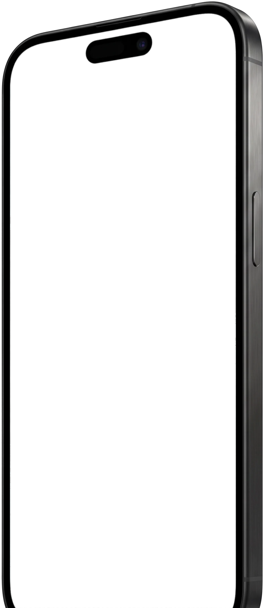
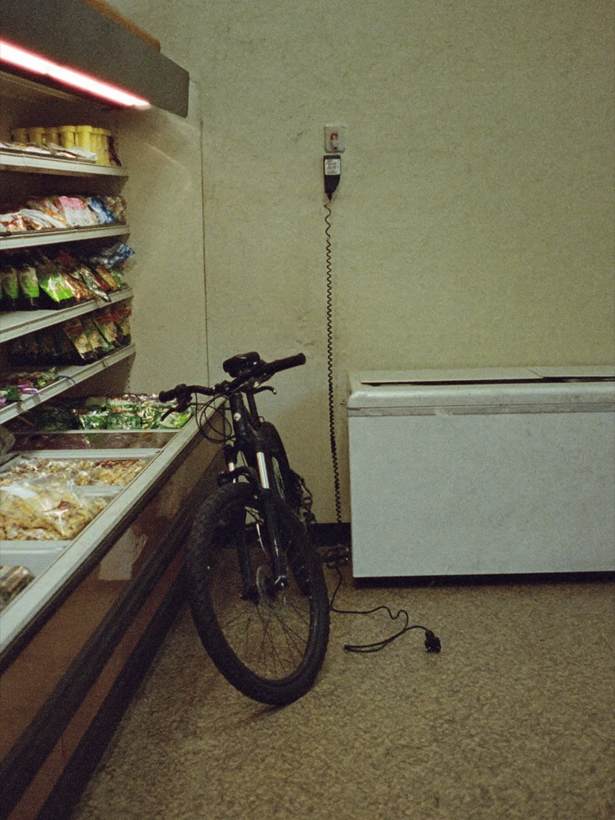
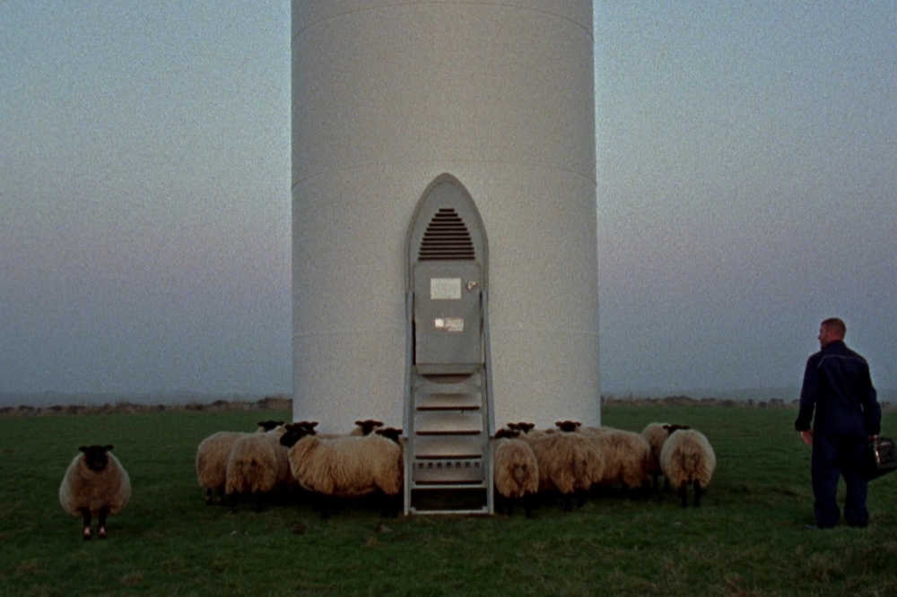
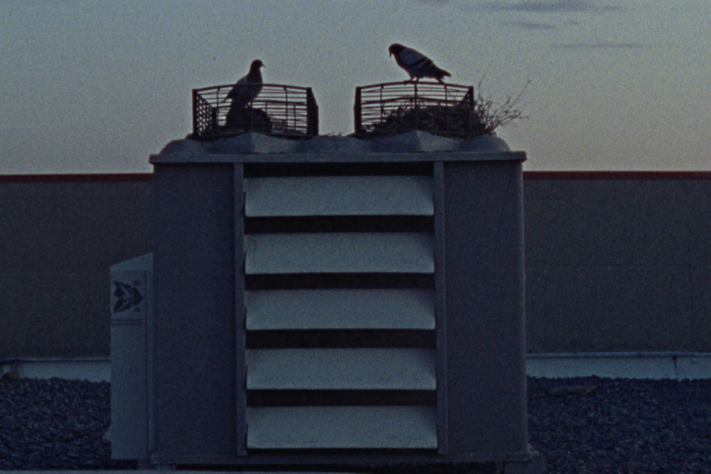
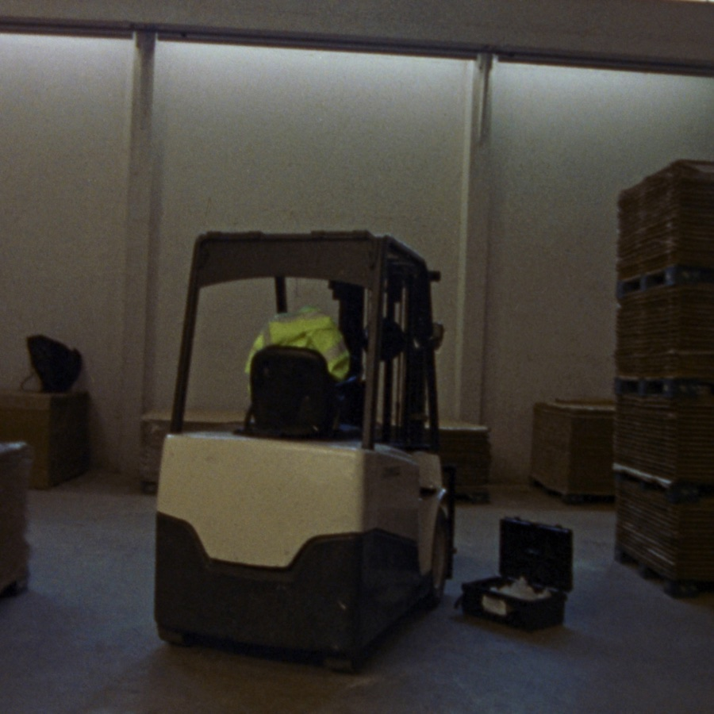
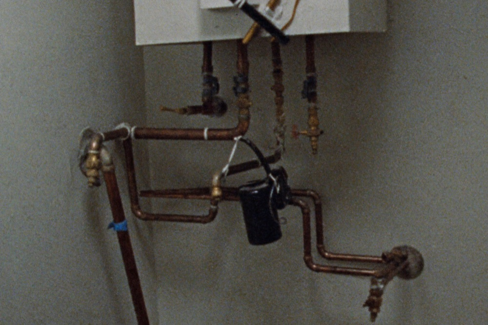

Before the job
Briefed on the way
Kenner texts the unit’s history, what fixed it last time and the part to bring. Reply to correct it.
Your technicians call or text Kenner for answers from past jobs, and it writes the report from one call.
Kenner

The call, in words. Kenner: Hey, it’s Kenner. What can I help you with? Technician: Hi Kenner, I’m at the site now and it’s throwing an F74 error. What does that mean again? Kenner: F74 means the boiler is reporting water pressure too low. It locks out the burner and stops heating. Since it’s recurring, compare the boiler reading with an external manometer. Technician: Sure, will do. Do you have any photos from the last visit you can send me, so I can compare? Kenner: I’ll send last visit’s photos. Sent to your iMessage. Technician: Cheers. And one more note before I continue: the owner has changed. It’s now George, no longer Tom, because he’s taken over from his father. Kenner: Got it. I’ll note George as the owner. Noted. Technician: Cheers Kenner, see you later. Kenner: See you later.
Before the job
Kenner texts the unit’s history, what fixed it last time and the part to bring. Reply to correct it.
On the job
Send a photo and a question. Kenner answers from past jobs and the manual, and shows the source.
After the job
One call. Kenner reads the report back, files it when you confirm and puts the part on order.

 learns from every job, even these…
learns from every job, even these…
Sales note Lockable socket recommended.

Access note Call the farmer before the visit.

Site note Second nest in the gas cooler.

Training note Upskill potential for Dave.

Unit history Non-standard install.